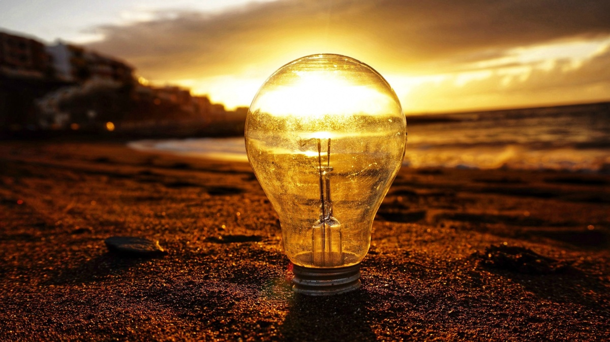

Datos Curiosos
Tristeza, ansiedad o sentimiento de vacío persistentes
"Entre más largo el período de luz, mayor el sentimiento de bienestar general. Tenemos más energía, nos sentimos más activos, más creativos y felices". Así que no sorprende que en invierno ocurra lo contrario. Estudios llevados a cabo en la Universidad de Southampton, Inglaterra, revelan que la mayoría de los adultos, al menos 90%, experimentan cambios sutiles en el estado de ánimo, energía y sueño cuando cambia la estación. Y en países como el Reino Unido, con sus marcados cambios estacionales, la industria pierde millones de horas laborales en los meses de invierno debido a la depresión invernal. Muchos quizás reconocen ese sentimiento de falta de energía y motivación cuando debemos enfrentar un día gris y nublado. Pero la gente que sufre TAE realmente tiene sentimientos graves de depresión. El TAE es un tipo de depresión grave y discapacitante porque evita que la persona funcione de forma normal. Y su causa principal es la oscuridad, señala la doctora Natasha Bijlani, psiquiatra del Hospital Priory en Inglaterra. "Los inviernos con menos luz provocan más casos de TAE. Excepto cuando nieva porque la nieve refleja la luz que hay y esto reduce la oscuridad" explicó a la BBC.
